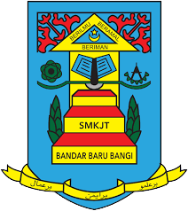

For my primary school, I went to Sekolah Kebangsaan Jalan Tiga at Bandar Baru Bangi, Selangor.
The school was 10 minutes away by car from my house.

I went to two high school.
My first high school was Sekolah Menengah Kebangsaan Jalan Tiga.
It was located at Bandar Baru Bangi, Selangor. I stayed there until Form 2.
Then, I moved to Terengganu and went to Sekolah Menengah Kebangsaan Tengku Bariah at Kuala Terengganu during Form 2 until the end of high school.
I transferred to this school because my dad has a new job here. I also an accounting student here.
Overall, I really enjoyed learning at my new school because I got to meet new friends who have been very nice to me.
I continue my studies at UiTM Machang, Kelantan.
as a student of Diploma in Information Management and now at the end of my last semester for diploma.
I'm glad I get to experience new friends and environments to improve myself better.